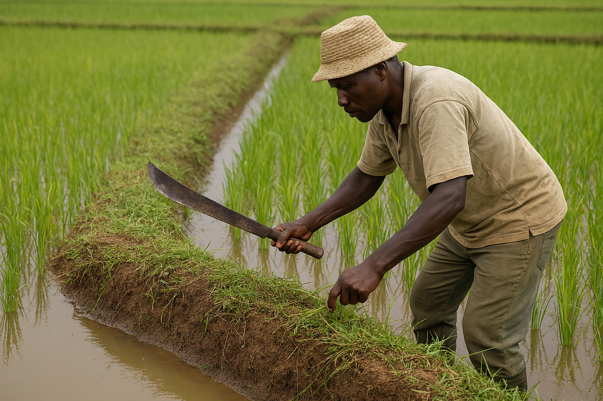
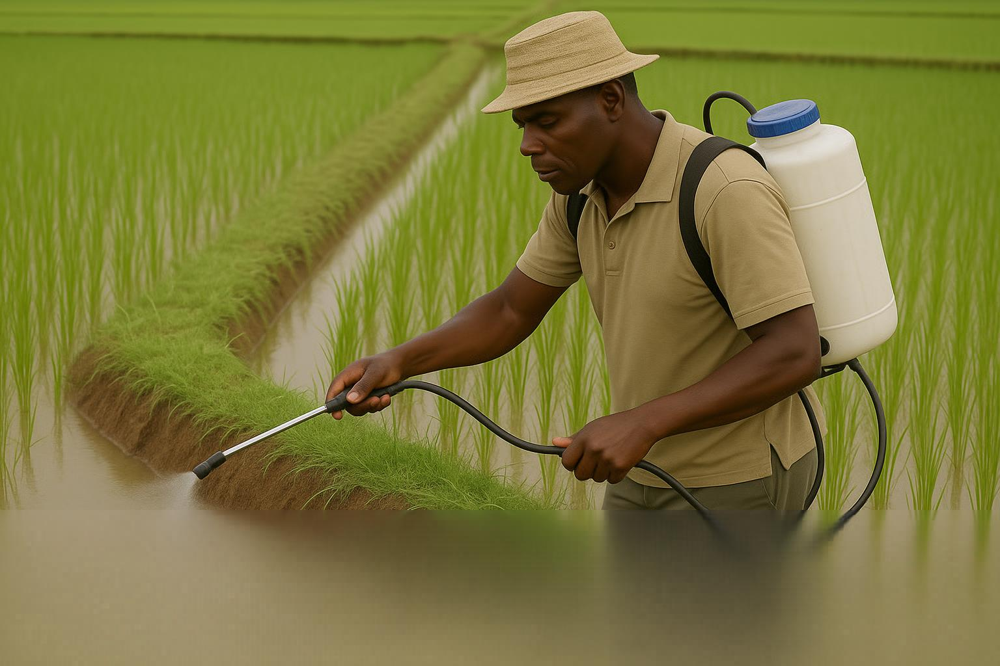
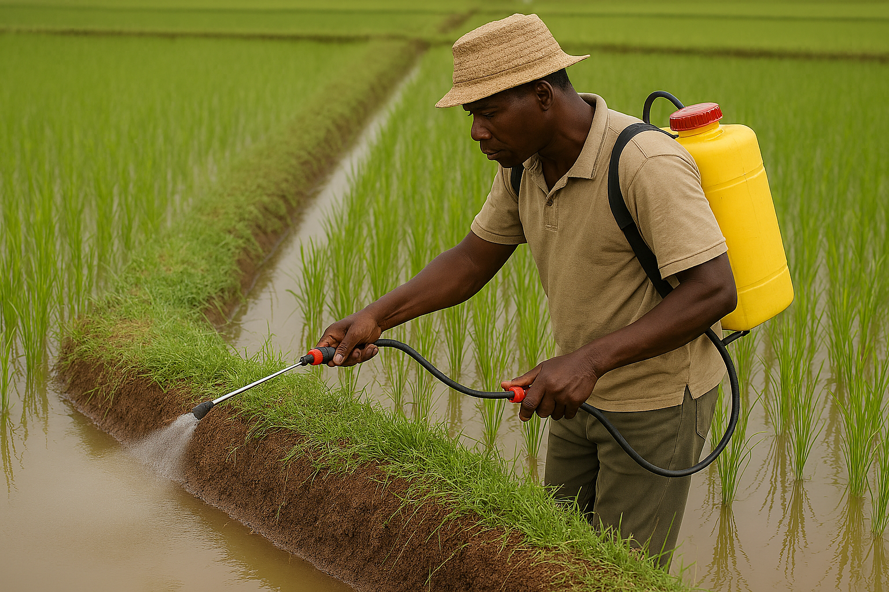

Routine Management
Maintaining healthy rice fields
Routine management practices keep rice crops strong by protecting bunds, controlling weeds, and applying herbicides at the right time.
Bund maintenance
Repair broken bunds and strengthen field edges to prevent water loss and ensure proper irrigation during the crop season.
- Repair broken bunds.
- Strengthen field edges.

Field tools
Tools for rice field maintenance
Simple tools are essential for everyday upkeep and efficient herbicide application.
Panga
Used for cutting grass, trimming weeds and maintaining bunds.
Jembe
Useful for breaking soil and repairing bunds by hand.
Spade
Helps with shaping bunds and moving soil for field repairs.
Herbicide application
Protecting young rice from weeds
Herbicides are used before and after emergence to support clean stands while reducing competition from weeds.
Pre-emergence herbicides
Applied before rice seedlings emerge to control weeds early and reduce weed pressure in the field.
Post-emergence herbicides
Applied after rice seedlings are established to target growing weeds without harming the crop.



Bund maintenance and spraying
Watch how farmers maintain bunds and apply herbicides safely to protect their rice crop.